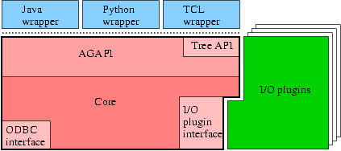

AGLIB consists of the main library (libag), AG wrappers, and file I/O plugins. The diagram below illustrates the architecture of AGLIB.

The main library (libag) consists of the core library and some API's (AGAPI and the Tree API) built on top of it. The core implements the annotation graph data structures (classes) and functions (methods) that allow users to access the data structure. The core also implements an ODBC interface (agdb) and file I/O plugin interface.
The agdb module allows annotation graphs to be stored and loaded from database systems via ODBC drivers.
The file I/O plugin interface is an interface for the file I/O plugins, and also defines a plugin programming interface.
AGAPI wraps the core, exporting a set of flat functions. The intention was to provide a set of functions that can be easily wrapped by SWIG so that we can quickly develop scripting language interfaces to the main library. However, because this flat API is so understand and use, it has been widely employed even by AGLIB components such as file I/O plugins, which could have used the core directly.
The Tree API is written using AGAPI and provides operations that manipulate annotation graph representation of tree structures as described in [Cotton & Bird, 2002].
The AG wrapper modules is a native module of one of the scripting languages, allowing programs written in that language to use the AGAPI functions (plus Tree API functions). These modules are created by wrapping AGAPI and the Tree API of the main library using SWIG. Advantages of this approach, over porting the entire C++ code of AGLIB to the native code of the language are that:
The File I/O plugins are seperate modules that can be loaded dynamically at runtime. These modules export Load and Store functions, which bridge the annotation graph data model and other file formats. As of the release time of AGLIB 2.0, eleven file I/O plugins are available. For more information on the supported formats, see Supported file formats.
| Component | Required package / Download site / Comments |
|---|---|
| agdb (ODBC interface) |
iODBC driver manager (libiodbc)
|
| Java AG wrapper |
Java SDK
|
| Python AG wrapper |
Python
|
| Tcl AG wrapper |
Tcl/Tk
|
| AG, ATLAS file I/O plugins |
Xerces C++
|
| CAG file I/O plugin |
zlib
|